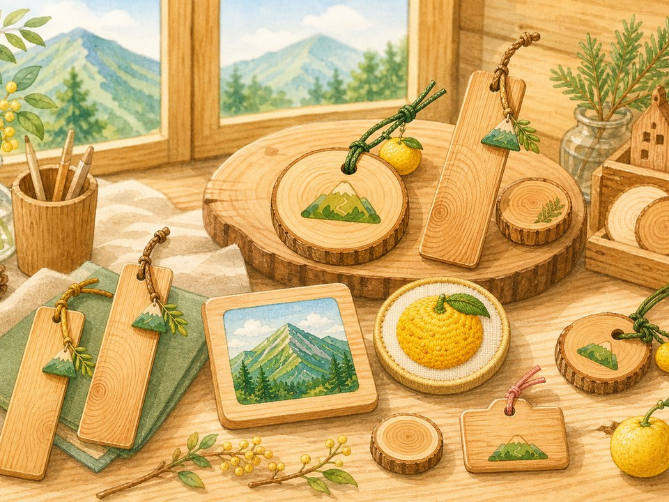
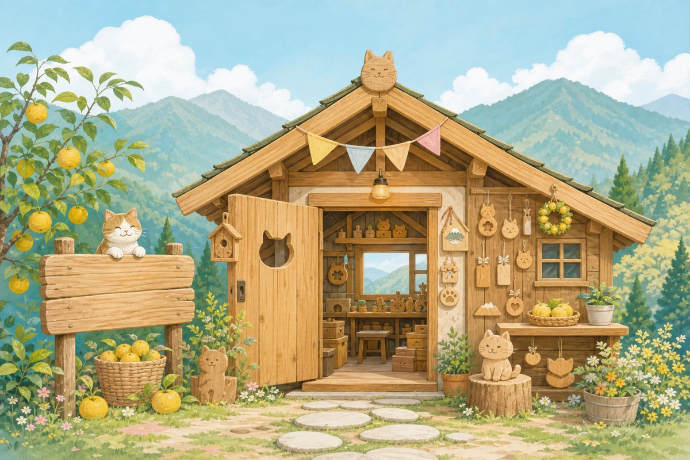
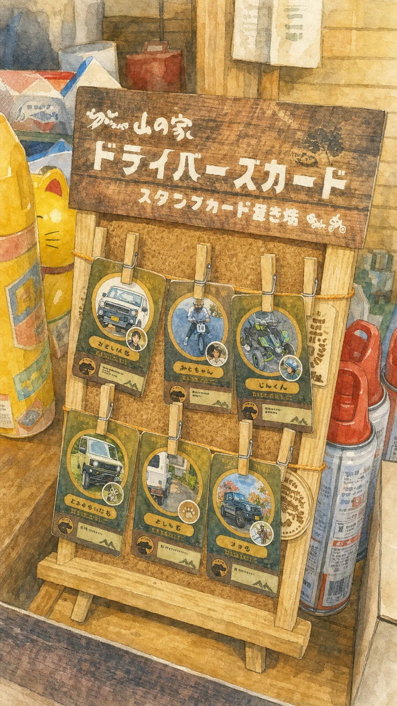
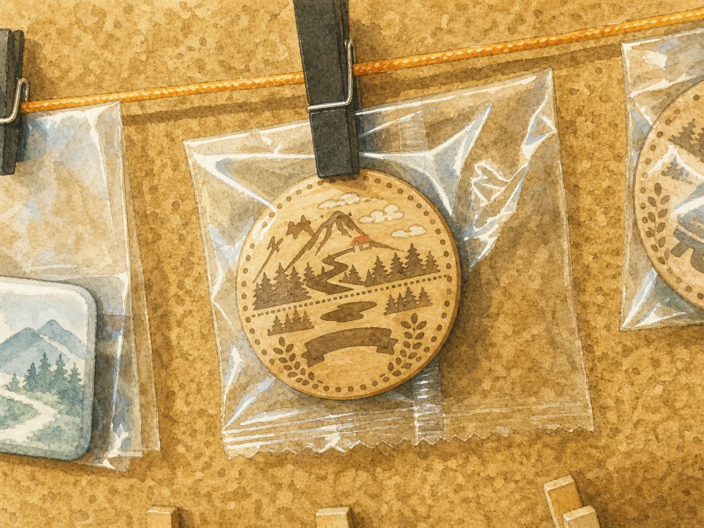
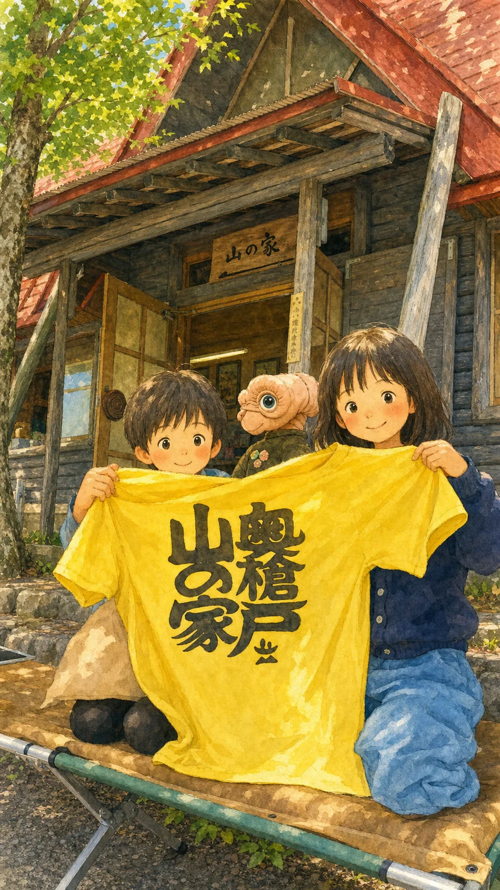
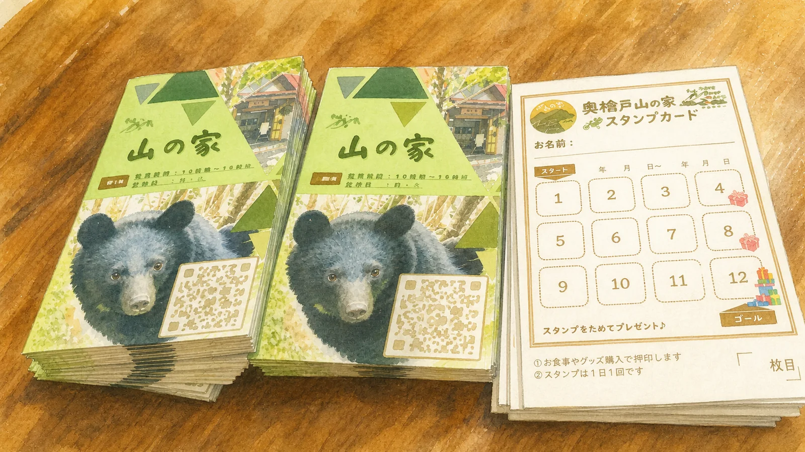
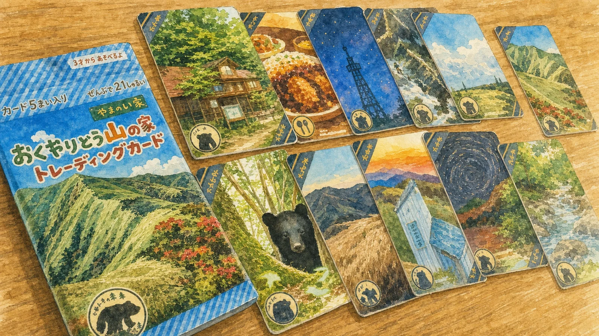

木のグッズ
木頭杉を使ったキーホルダー、コースター、バッジ、しおりなどを小ロットで作ります。
KITO SUGI / OKUYARIDO / HANDMADE
木頭杉や山の家まわりの物語を、キーホルダー、しおり、参加証、記念品などの小さなグッズにして届けます。


ただのおみやげではなく、そこへ行ったこと、そこで出会ったこと、好きな場所を少し支えたい気持ちまで持ち帰れるものを作ります。

Nekomono Mini Games
豆腐を等分する雨の日と、割り箸を気持ちよく割るひととき。どちらも独立した一つのゲームとして、ゆっくり遊べます。

静かな小屋番です。
うまくいく日も、少しずれる日も。となりでのんびり見守ります。
What I Make
木頭杉を使ったキーホルダー、コースター、バッジ、しおりなどを小ロットで作ります。
イベント用の参加証、謎解きキット、記念品など、体験のあとに残る小物を作ります。
キャップ、バッグ、Tシャツなどに、刺しゅうや小さなワンポイントを入れた布小物を作ります。
Works
山の家の風景や物語を、持ち帰れるかたちに。カード、Tシャツ、木の小物など、これまでに生まれた品々です。











About
大量生産ではなく、必要な分だけ、ひとつずつ。山の家、イベント、旅の思い出にそっと残るものづくりを目指しています。
Contact
小さなグッズや記念品、イベントで使うものなど、まずはGoogleフォームから気軽にご相談ください。